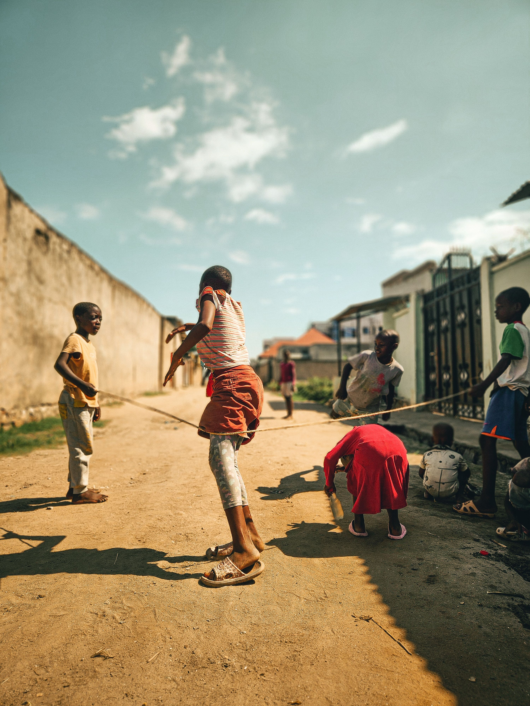

Our Community Programmes
Community programmes provide opportunities for individuals and families to access information, support and activities that can contribute to stronger communities.
The programmes presented on this student website represent a proposed structure for the organisation's online presence.
Community Awareness
Community awareness activities can help residents learn about important social issues, available support services and resources within their communities.
Activities May Include:
- Community information sessions
- Awareness campaigns
- Information sharing
- Community discussions
Youth Development
Youth development programmes can provide young people with opportunities to develop skills, participate in community activities and learn about available resources.
Activities May Include:
- Skills development activities
- Youth awareness sessions
- Educational support
- Community participation
Family Support Initiatives
Family support initiatives can provide information, guidance and referrals to individuals and families experiencing challenges.
Activities May Include:
- Family support information
- Parenting information
- Support referrals
- Community resources
Community Outreach
Community outreach helps organisations engage directly with people and make information about available services easier to access.
Activities May Include:
- Community visits
- Information distribution
- Community engagement
- Support awareness
Volunteer Opportunities
Volunteers can contribute their time and skills to support community initiatives and activities.
Volunteers May Help With:
- Community events
- Awareness campaigns
- Administrative assistance
- Community outreach
Get Involved
If you would like to learn more about our programmes or become involved in community activities, please contact us.
Get InvolvedImportant Information
The programmes and activities displayed on this student website are proposed content created for academic purposes. Visitors should contact the organisation directly to confirm current programmes, availability and requirements.